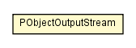

edu.umd.cs.piccolo.util
Class PObjectOutputStream

java.lang.Object
 java.io.OutputStream
java.io.ObjectOutputStream
edu.umd.cs.piccolo.util.PObjectOutputStream
java.io.OutputStream
java.io.ObjectOutputStream
edu.umd.cs.piccolo.util.PObjectOutputStream
- All Implemented Interfaces:
- Closeable, DataOutput, Flushable, ObjectOutput, ObjectStreamConstants
public class PObjectOutputStream
- extends ObjectOutputStream
PObjectOutputStream is an extension of ObjectOutputStream to handle
optional elements. This is similar to the concept of Java's
"weak references", but applied to object serialization rather than garbage
collection. Here, PObjectOutputStream provides a method,
writeConditionalObject, which only serializes the specified
object to the stream if there is a strong reference (if it has been written
somewhere else using writeObject()) to that object elsewhere in the stream.
To discover strong references to objects, PObjectOutputStream uses a
two-phase writing process. First, a "discovery" phase is used to find out
what objects are about to be serialized. This works by effectively
serializing the object graph to /dev/null, recording which objects are
unconditionally written using the standard writeObject method. Then, in the
second "write" phase, ObjectOutputStream actually serializes the data to the
output stream. During this phase, calls to writeConditionalObject() will only
write the specified object if the object was found to be serialized during
the discovery stage. If the object was not recorded during the discovery
stage, a an optional null (the default) is unconditionally written in place
of the object. To skip writting out the null use
writeConditionalObject(object, false)
By careful implementation of readObject and writeObject methods, streams
serialized using PObjectOutputStream can be deserialized using the standard
ObjectInputStream.
| Fields inherited from interface java.io.ObjectStreamConstants |
baseWireHandle, PROTOCOL_VERSION_1, PROTOCOL_VERSION_2, SC_BLOCK_DATA, SC_ENUM, SC_EXTERNALIZABLE, SC_SERIALIZABLE, SC_WRITE_METHOD, STREAM_MAGIC, STREAM_VERSION, SUBCLASS_IMPLEMENTATION_PERMISSION, SUBSTITUTION_PERMISSION, TC_ARRAY, TC_BASE, TC_BLOCKDATA, TC_BLOCKDATALONG, TC_CLASS, TC_CLASSDESC, TC_ENDBLOCKDATA, TC_ENUM, TC_EXCEPTION, TC_LONGSTRING, TC_MAX, TC_NULL, TC_OBJECT, TC_PROXYCLASSDESC, TC_REFERENCE, TC_RESET, TC_STRING |
| Methods inherited from class java.io.ObjectOutputStream |
annotateClass, annotateProxyClass, close, defaultWriteObject, drain, enableReplaceObject, flush, putFields, replaceObject, useProtocolVersion, write, write, write, writeBoolean, writeByte, writeBytes, writeChar, writeChars, writeClassDescriptor, writeDouble, writeFields, writeFloat, writeInt, writeLong, writeObject, writeObjectOverride, writeShort, writeStreamHeader, writeUnshared, writeUTF |
| Methods inherited from class java.lang.Object |
clone, equals, finalize, getClass, hashCode, notify, notifyAll, toString, wait, wait, wait |
PObjectOutputStream
public PObjectOutputStream(OutputStream out)
throws IOException
- Throws:
IOException
toByteArray
public static byte[] toByteArray(Object aRoot)
throws IOException
- Throws:
IOException
writeObjectTree
public void writeObjectTree(Object aRoot)
throws IOException
- Throws:
IOException
writeConditionalObject
public void writeConditionalObject(Object object)
throws IOException
- Throws:
IOException
reset
public void reset()
throws IOException
- Overrides:
reset in class ObjectOutputStream
- Throws:
IOException
recordUnconditionallyWritten
protected void recordUnconditionallyWritten(Object aRoot)
throws IOException
- Throws:
IOException